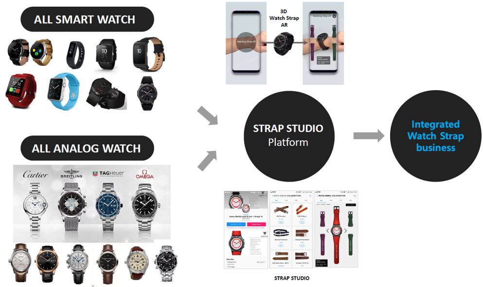

Service Overview
Sep.2016 ~ Dec.2016
Description
Strap studio is a project for a new platform that supports 3rd party selling Smart Watch Strap. Strap Studio allows Galaxy watch users to easily find and purchase a variety of personalized optimized straps, while at the same time helping Strap sellers to easily reach new customers. It also helps to generate more sales through joint promotion between Watch face seller and Strap seller.
Role: Project Planning, UX-UI, Research, Branding
Service Detail
Auto-Matching system
One of the main features of Strap Studio is the Auto-Matching system. You can compare Strap Studio's data base with the data in the data base of Watch Store and recommend Strap optimized to watch face. The Auto-Matching system is also applied to the development tool, which helps the developer to carry out the project with the Strap and co-promotion from the development stage in mind. The Auto-Matching system allows the user to purchase a strap that matches the watch face, which contributes to increase sales of both Watch face and Strap.
AR Preview
Customers can also wear their own virtual straps using Augmented Reality technology. This allows customers to see the actual wear and feel of the wearer and helps the wearer to wear a better fit.
Background
There are many customers in the market who want to buy the most suit strap, and there are many strap makers who want to sell strap to them. But it was difficult to contact each other, so they could not meet each other's needs. Strap makers has only a limited number of customers, and customers can only purchase through limited sellers. I have planned to connect these two to meet each other's needs.
Project Goals
Create New Business - Combining digital and Analog world together
Service Design Work
Wireframe

Service Extension
In the long run, this service will expand to the integrated Strap Studio, which also participates in the Smart Watch strap maker as well as the regular strap makers. This service is going to build a system that will allow customers to compare and purchase all types of watch straps at a glance through Strap Studio.